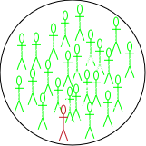
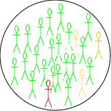
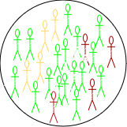
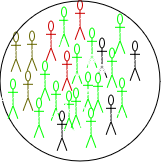
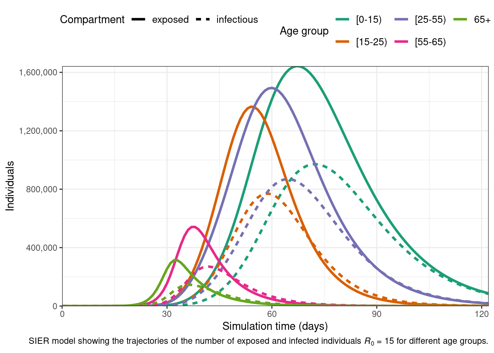
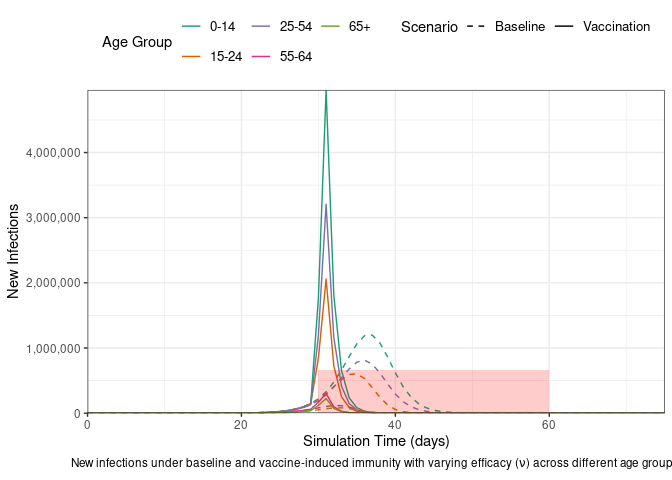
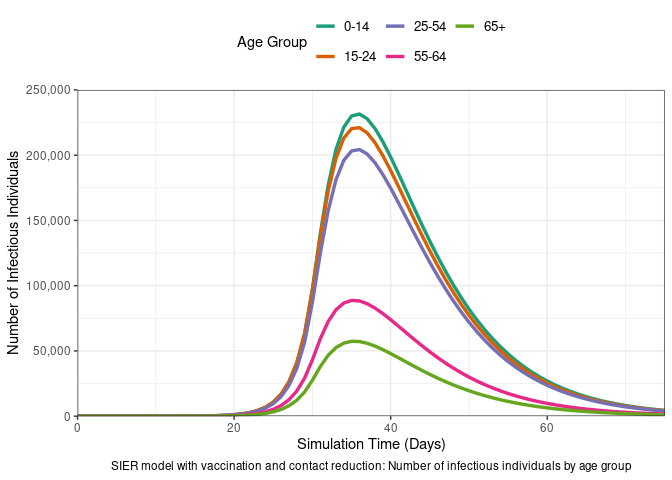
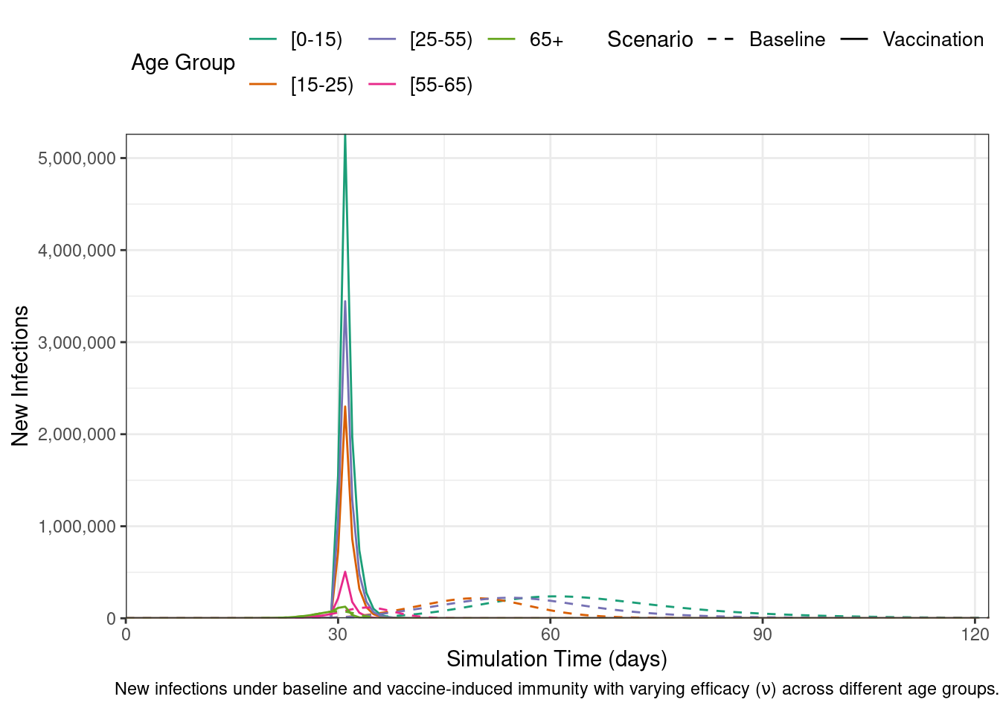

Introduction to Mathematical Modelling of Infectious Diseases
Preface
This document is prepared for the participants of the Outbreak Analytics in R course, organized by the Epiverse-TRACE team. Its purpose is to provide a concise introduction to the mathematical theory behind modeling infectious epidemics. We will use the Susceptible, Exposed, Infected, and Recovered (SEIR) model, applicable to diseases like measles, mumps, rubella, as an example.
Secanrio
SSuppose a new infection has been detected in a closed community of \(\mathbf{N}\) individuals, with the infection diagnosed in a single individual. The remaining \(\mathbf{N-1}\) individuals are all at risk of getting the infection and are considered susceptible (\(\mathbf{S}\)). An infected person interacts, on average per time unit (e.g., a day, week, or month), with some \(\mathbf{k}\) individuals within the community. In particular, the infected person interacts with \(\frac{\mathbf{K\cdot S}}{\mathbf{N}}\) susceptible individuals, among whom \(\mathbf{k}' \leq \mathbf{k}\) may become infected. If the infection is highly contagious, \(\mathbf{k}'\) will be closer to \(\mathbf{k}\), and vice versa. The probability of transmission is calculated as \(\mathbfcal{P}= \frac{\mathbf{k}'}{\mathbf{k}}.\) Consequently, on average, the infected individual will infect \(\beta\cdot \frac{\mathbf{S}}{\mathbf{N}}\) susceptible individuals per time unit, where \(\beta = \mathbfcal{P} \cdot \mathbf{k}\) is called the effective transmission rate. This represents the average rate at which an infected individual can transmit the infection to a susceptible individual.
Depending on the nature of the disease, a newly infected individual may take time to show symptoms. This time period is known as the incubation period. Susceptible individuals who come into contact with an infected person and acquire the infection first move to an intermediate state called exposed (\(\mathbf{E}\)). T here they (he/she) spent, on average, \(\frac{1}{\omega}\) units time (the incubation period) and then move to the infected class (\(\mathbf{I}\)) at a constant rate \(\omega\). Infected individuals are removed (either by recovery or death) from \(I\) at a constant rate \(\gamma\), with \(\frac{1}{\gamma}\) representing the average recovery duration. Upon recovery, they gain lifelong immunity against the current infection, meaning they do not become susceptible again, and they move to the recovered class (\(\mathbf{R}\)) (see Figure 1).
   
The four classes considered define the \(\mathbf{SEIR}\) model. The sizes of these classes change overtime and thus are functions of time \(t\), and the total population at any time \(t\) is \(N(t)= S(t) + E(t) + I(t)+ R(t)\). The rates of change between these classes are captured mathematically through four differential equations as follows:
At time \(t_0=0\), there is one infected person (\(\mathbf{I}_0 =1\)), while all other individuals remain susceptible (\(\mathbf{S}_0= \mathbf{N} -\mathbf{I}_0 = \mathbf{N} -1\)). Initially, there are no exposed or recovered individuals (\(\mathbf{E}_0= 0\) and \(\mathbf{R}_0 = 0\)). These are known as the initial values of the system in Equation 1.
Solving Equation 1 involves determining the values of the compartments at any time \(t>t_0\), starting from the initial conditions. Since the compartments represent individuals, their values must always be non-negative. This characteristic is referred to as the positivity of the solution.
Before, delving into mathematical details of how to solve Equation 1, a few key observations can be made:
At the onset of an epidemic, the number of susceptible individuals begins to decrease exponentially, while the number of exposed and infectious individuals increases. As the epidemic progresses, the susceptible population becomes depleted, and the exposed and infectious groups reach their peak before starting to decline. Meanwhile, the number of recovered individuals continues to increase without decreasing.
The infection will take off only when \(\frac{\mathbf{dE}}{dt} > 0\) and \(\frac{\mathbf{dI}}{dt} > 0\), and taking the values of these two terms from Equation 1 leads to
\[
\begin{eqnarray}
\beta \cdot \frac{S\cdot I}{N} &-& \omega \cdot E > 0\\
\omega\cdot E &-& \gamma \cdot I > 0.
\end{eqnarray}
\qquad(2)\] Adding the two equations in Equation 2, gives \(\frac{\beta}{\gamma} > \frac{\mathbf{N}}{\mathbf{S}}\). At time \(t=0\), we have \(\mathbf{S} = \mathbf{N}-1 \approx \mathbf{N}\). Therefore, the infection with take off \(\frac{\beta}{\gamma} > 1\). This is a very interesting observation –It tells that the disease cases will increase if the ratio of new infections to recovered cases is greater than 1.
The ratio \(\frac{\beta}{\gamma}\) represents the basic reproduction number, \(\mathbfcal{R}_0\), which is defined as the average number of new infections caused by a single infected individual in a fully susceptible population. \(\mathbfcal{R}_0\) is a crucial metric for understanding the transmissibility of an infectious disease. A higher value of \(\mathbfcal{R}_0\) indicates a more transmissible disease, leading to a faster spread within the community.
The \(\mathcal{R}_0\) value helps to determine the finalsize- the total number of individuals that that will be infected- of the outbreak via the following equation \[
\begin{equation}
z = 1 - e^{-\mathcal{R}_0 \cdot z}
\end{equation}
\qquad(3)\]
Where:
\(z\) is the final size (the fraction of the population infected),
\(\mathcal{R}_0\) is the basic reproduction number, and
\(e\) is the base of the natural logarithm.
Additionally, the basic reproduction number \(\mathcal{R}_0\) is crucial for determining the herd immunity threshold (HIT), which represents the minimum proportion of the population that must be immune (either through vaccination or previous infection) in order to contain the epidemic and prevent widespread transmission. The formula for the herd immunity threshold is: \[ HIT = 1 - \frac{1}{\mathcal{R}_0} \qquad(4)\]
Where:
HIT is the proportion of the population that needs to be immune to achieve herd immunity,
As \(\mathcal{R}_0\) increases, the herd immunity threshold also increases, meaning a larger proportion of the population must be immune to prevent the epidemic from spreading.
Measles Outbreak in Burkina Faso
Backaground
Measles is a highly contagious viral disease that spreads quickly, particularly in environments where people live or gather in close quarters, such as schools, healthcare facilities, or densely populated urban areas. Transmission occurs through respiratory droplets when an infected person coughs or sneezes, and the virus can remain viable in the air for up to two hours. Effective vaccines are available, offering an efficacy of 93% to 97%, making vaccination a key tool in controlling measles outbreaks.
Given the virus’s high transmissibility, even a single case of measles can trigger large outbreaks, especially in regions with low vaccination coverage. The incubation (pre-infectious) period for measles is typically around 8 days, [while the infectious period averages 5 days][masters2023measles]. The SEIR model in Equation 1 is commonly employed to simulate the dynamics of measles outbreaks and evaluate control measures like vaccination
Burkina Faso Situation in Jan 2024
Burkina Faso, like many other countries in Africa, faces recurring measles outbreaks. This can be attributed to factors such as limited healthcare access, inadequate vaccination coverage, and fragile healthcare systems. In 2023, Burkina Faso experienced a particularly severe outbreak, [with over 2,000 suspected cases reported][crisis24], prompting health authorities and international organizations to scale up [vaccination campaigns in an effort to curtail the spread of the disease][savethechildren, thecable].
We will simulate the measles outbreak in Burkina Faso using the SEIR model in Equation 1. This will allow us to explore the outbreak dynamics with and without vaccination. For this purpose, we will use the R package {epidemics}, which is designed for modeling infectious disease spread.
Baseline Model
Model Assumptions and Parameters
Total Population: The population of Burkina Faso is approximately \(N\approx 22.67\) million.
Population Structure:
No Age Stratification: Assume the population is homogeneous with respect to age. This means that all individuals, regardless of age, have the same susceptibility to measles and contribute equally to the transmission dynamics.
Highly Mixed Community: Assume the population is well-mixed and the transmission occurs uniformly across the entire population. Meaning that every individual has an equal probability of coming into contact with any other individual. This implies that geographic or social structures (like clustering within families, schools, or neighborhoods) are not considered.
Initial Conditions:
A single infectious case is introduced into the population: \(I_0 = 1\).
The entire population, except for this one case, is initially susceptible: \(S_0 = N - 1\).
No individuals are in the exposed stage at the start: \(E_0 = 0\).
No individuals have recovered: \(R_0 = 0\).
Incubation Period: The average incubation period for measles is around 8 days (the time period between exposure and becoming infectious), so the transition rate from exposed to infectious individuals is: \(\omega = \frac{1}{8}\).
Infectious Period: The average infectious period lasts for 5 days, which means the recovery rate is: \(\gamma = \frac{1}{5}\)
Basic Reproduction Number\(\mathcal{R}_0\):
\(\mathcal{R}_0 =15\) (for measles this value typically ranges from 12 to 18).
This makes the transmission rate \(\beta = \mathbfcal{R}_0\cdot\gamma = 3\)
This means each infectious individual causes 3 new infections per day in a fully susceptible population.
By applying these assumptions and parameters to Equation 1, we can simulate the potential trajectory of the measles outbreak using the syntax provided by the {epidemics} package as shown in the below is code chunk.
# Loading librarieslibrary(dplyr)library(ggplot2)library(epidemics)# Define the population structure for Burkina Fasobfaso <-population(name ="Burkina Faso",contact_matrix =matrix(1), # Well-mixed populationdemography_vector =22.67e6, # Population sizeinitial_conditions =matrix(c(1-1/22.67e6, 1/22.67e6, 0, 0, 0), # Initial conditions: Susceptible, exposed, Infectious, vaccinated, and recoverednrow =1, ncol =5 ))# Run the SEIR model simulationoutput <-model_default(population = bfaso,transmission_rate =15/5, # R0/infectious period = 15/5 = 3infectiousness_rate =1/8, # 1/incubation period (pre-infectious phase)recovery_rate =1/5, # 1/infectious periodtime_end =120, # Simulation over 120 daysincrement =1# Daily increments)# Plot the epidemic curve for susceptible, exposed, infectious, and recoveredfilter(output, compartment %in%c("exposed", "infectious")) %>%ggplot(aes(x = time,y = value /10^6, # Scale to millionscol = compartment,linetype = compartment )) +geom_line(linewidth =1.5) +theme_bw() +theme(legend.position ="top" ) +labs(x ="Simulation Time (days)",y ="Individuals (in millions)",caption =expression(paste("The dynamics of SIER model with ", italic(R)[0], "= 15, ", " showing the trajectories of number of exposed and infected individuals")) )
Expected Epidemic Size & Herd Immunity
Using the {finalsize} package implements Equation 3 for calculate the expected proportion of the population that will be infected given a specified basic reproduction number \((\mathcal{R}_0)\). The calculation can be done as follows:
# Loading the finalsize librarylibrary(finalsize)finalsize::final_size(10)
For \(\mathcal{R}_0 \geq 10\), the results indicate that nearly the entire population is expected to be infected by measles. The \(HIT\) needed to contains the epidemic is about \(93\%\), uaing the formula given in Equation 4.
Age-Structured Model
The age structure of Burkina Faso is characteristic of a young population, with a majority of the population being under 25 years old. [According to recent estimates][un_population_prospects, cia_world_factbook_bf, world_bank_population_data], the age structure is broken down as follows:
\([0\to15)\) years: ~ 44 (43-45)% of the population
\([15\to 25)\) years: ~19.5 (19-20)%
\([25\to 55)\) years: ~29 (28-30)%
\([55\to 65)\) years: ~5 (3-5)%
\(65+\) : ~2.5 (2-3)%
Contact Matrix
A contact matrix typically consists of rows and columns representing different age groups, where each cell indicates the average number of contacts between individuals of the age group corresponding to that row and column.
Although we do not have a direct access for contact matrix for Burkina Faso, we can resort for a hypothetical contact matrix based on general assumptions about high contact rates among younger populations and lower rates among older age groups:
Table for a hypothetical mean contacts between different age groups in Burkina Faso population.
[0-15)
[15-25)
[25-54)
[55-65)
65+
[0-15)
20
10
5
2
1
[15-25)
10
15
10
4
2
[25-55)
5
10
15
6
3
[55-65)
2
4
6
10
5
\(65+\)
1
2
3
5
10
# Initial conditions: one in every 1 million is infectedbf_pop <-22.67e6contact_matrix <-matrix(c(20, 10, 5, 2, 1, # Contacts from 0-14 years10, 15, 10, 4, 2, # Contacts from 15-24 years5, 10, 15, 6, 3, # Contacts from 25-54 years2, 4, 6, 10, 5, # Contacts from 55-64 years1, 2, 3, 5, 10), # Contacts from 65+ yearsnrow =5, # Number of rowsbyrow =TRUE, # Fill the matrix by rowsdimnames =list(c("[0-15)", "[15-25)", "[25-55)", "[55-65)", "65+"),c("[0-15)", "[15-25)", "[25-55)", "[55-65)", "65+") ))# Define the demography vector for Burkina Fasodemography_vector <-c(0.44, 0.195, 0.29, 0.05, 0.025) * bf_popnames(demography_vector) <-rownames(contact_matrix)print(demography_vector)
# scale the contact matrix so the largest eigenvalue is 1.0# this is to ensure that the overall epidemic dynamics correctly reflect# the assumed value of R0contact_matrix <- contact_matrix /max(Re(eigen(contact_matrix)$values))# divide each row of the contact matrix by the corresponding demography# this reflects the assumption that each individual in group {j} make contacts# at random with individuals in group {i}contact_matrix <- contact_matrix / demography_vector# Print the contact matrix#print(contact_matrix)# Define the population structure for Burkina Fasoinitial_i <-1/ bf_popinitial_conditions <-c(S =1- initial_i, E =0, I = initial_i, R =0, V =0)# Replicate initial conditions for all age groupsinitial_conditions_matrix <-rbind( initial_conditions, initial_conditions, initial_conditions, initial_conditions, initial_conditions)rownames(initial_conditions_matrix) <-rownames(contact_matrix)#print(initial_conditions_matrix)
# Create the population objectbf_population <-population(name ="Burkina Faso",contact_matrix = contact_matrix,demography_vector = demography_vector,initial_conditions = initial_conditions_matrix)# Run the epidemic modeloutput <-model_default(population = bf_population,transmission_rate =15/5, # R0/infectious period = 15/5 = 3infectiousness_rate =1/8, # 1/incubation period (pre-infectious phase)recovery_rate =1/5, # 1/infectious periodtime_end =122, # Simulation over 122 daysincrement =1# Daily increments)# Plot the epidemic curveoutput %>%filter(compartment %in%c("exposed", "infectious")) %>%ggplot(aes(x = time,y = value,col = demography_group,linetype = compartment )) +geom_line(linewidth =1.2) +scale_y_continuous(labels = scales::comma) +scale_colour_brewer(palette ="Dark2", name ="Age group") +expand_limits(y =c(0, 500e3)) +coord_cartesian(expand =FALSE) +theme_bw() +theme(legend.position ="top", legend.text =element_text(size =10,hjust =0, lineheight =121) ) +labs(x ="Simulation time (days)",linetype ="Compartment",y ="Individuals",caption =expression(paste("SIER model showing the trajectories of the number of exposed and infected individuals ", italic(R)[0], " = 15 for different age groups.")) ) +guides(color =guide_legend(nrow =2) )

Effective Reproduction Number \(\mathcal{R}_{eff}\)
Age-structured models account for heterogeneous characteristics in the population, such as:
Demographic differences in social contacts,
Variations in demographic distribution, and
Differences in susceptibility to infection.
These factors result in different \(\mathcal{R}_0\) values for each age group. The effective reproduction number\(\mathcal{R}_{eff}\) represents the overall reproduction number across all age groups while accounting for these differences. It is calculated using the following formula:
\(\rho(C)\) is the largest eigenvalue of the contact matrix \(C\), which is derived from the social contact patterns, scaled by the population distribution across different demographic and susceptibility groups.
\(\lambda\) is the force of infection, which measures the rate at which susceptible individuals are infected. This is distinct from the effective transmission rate, often denoted as \(\beta\).
\(\gamma\) represents the infectious period, which is the average duration an individual remains infectious.
The {finalsize}package implements Equation 5, and we can use it to calculate the \(\mathcal{R}_{eff}\) for our age-structured model, as follows:
r0 <-15# basic reproduction number # define the number of age and susceptibility groupsn_demo_grps <-length(demography_vector)n_risk_grps <-5# In this example, risk varies across groupssusceptibility <-matrix(data =c(0.80, 0.5, 0.3, 0.2, 0.1), nrow = n_demo_grps, ncol = n_risk_grps)# risk does not vary within groupsp_susceptibility <-matrix(data =1, nrow = n_demo_grps, ncol = n_risk_grps)# p_susceptibility rows must sum to 1.0p_susceptibility <- p_susceptibility /rowSums(p_susceptibility)reff <-r_eff(r0 = r0,contact_matrix = contact_matrix,demography_vector = demography_vector,susceptibility = susceptibility,p_susceptibility = p_susceptibility)print(reff)
[1] 8.529089
\(\mathcal{R}_{eff}\) vs \(\mathcal{R}_0\)
How different is the \(\mathcal{R}_{eff}\) value from \(\mathcal{R}_0\)?
Interventions models
Interventions against measles include prevention, control, and treatment. Controlling its spread requires a combination of public health measures, such as reducing contact, isolating infectious and exposed individuals, and vaccination. In this section, we will simulate the SEIR model with interventions using the {epidemics} package.
Contacts Reduction Model
Reducing contact by a certain percentage, say (20%), impacts the transmission rate \(( \beta )\). This reduction can be achieved through measures such as quarantine, limiting public gatherings, and regular screening in healthcare settings. To include such interventions in the baseline SEIR model, the {epidemics} package provides an object called interventions, which is added to the model definition as shown in the code chunk below.
reduced_contacts <-intervention(name ="reduce",type ="rate",time_begin =30,time_end =30+60,reduction =0.2)# Run the epidemic modeloutput2 <- epidemics::model_default(population = bf_population,transmission_rate =15/5, # R0/infectious period = 15/5 = 3infectiousness_rate =1/8, # 1/incubation period (pre-infectious phase)recovery_rate =1/5, # 1/infectious periodintervention =list(transmission_rate = reduced_contacts),time_end =120, # Simulation over 75 daysincrement =1# Daily increments)
To examine the effect that implementing a reduction in contact has on the daily number of new infections, we plot the results from the two models.
# Load new infections data for each scenariodata_baseline <-new_infections(output, by_group =TRUE)data_reduced <-new_infections(output2, by_group =TRUE)# Assign scenario namesdata_baseline$scenario <-"Baseline"data_reduced$scenario <-"Reduced Contact"# Combine the data from both scenariosdata_combined <-bind_rows(data_baseline, data_reduced)# Plot new infections over time with scenario and demographic groupsggplot(data_combined) +geom_line(aes(x = time, y = new_infections, col = demography_group, linetype = scenario) ) +# Highlight the reduced contact intervention periodannotate(geom ="rect",xmin = reduced_contacts[["time_begin"]],xmax = reduced_contacts[["time_end"]],ymin =0, ymax =0.67e3,fill =alpha("red", 0.2),linetype ="dashed" ) +# Set axis scaling and formattingscale_y_continuous(labels = scales::comma) +scale_linetype_manual(name ="Scenario",values =c("Baseline"="dashed","Reduced Contact"="solid" ) ) +scale_colour_brewer(palette ="Dark2",name ="Age Group" ) +expand_limits(y =c(0, 1e3)) +coord_cartesian(expand =FALSE) +theme_bw() +theme(legend.position ="top" ) +labs(x ="Simulation Time (days)",y ="New Infections",linetype ="Scenario", caption =expression(paste("New infections under baseline and 20% reduced transmission rate (", beta, ") for different age groups.")) ) +# Adjust legend display to fit in two rowsguides(color =guide_legend(nrow =2) )

Vaccination Model
An effective vaccine for measles exists, known as the measles, mumps, and rubella (MMR) vaccine. The efficacy of the measles component of the MMR vaccine varies slightly depending on the age at which it is administered and the number of doses received. For example, the vaccine’s efficacy is approximately \(93\%\), \(97\%\), \(95\%\), \(94\%\), and \(85\%\) for the age groups \([0\to 15)\), \([15\to 25)\), \([25\to 55)\), \([55\to 65)\), and \(65+\), respectively. The {epidemics} package enables the incorporation of vaccination interventions into modeling, as demonstrated in the code chunk below.
vaccinate_elders <-vaccination(name ="Vaccination compagain",time_begin =matrix(30, nrow(contact_matrix)),time_end =matrix(90, nrow(contact_matrix)),nu =matrix(c(0.93, 0.97, 0.95, 0.90, 0.95 )))# Run the epidemic modeloutput3 <- epidemics::model_default(population = bf_population,transmission_rate =15/5, # R0/infectious period = 15/5 = 3infectiousness_rate =1/8, # 1/incubation period (pre-infectious phase)recovery_rate =1/5, # 1/infectious periodvaccination = vaccinate_elders,time_end =120, # Simulation over 120 daysincrement =1# Daily increments)# Plot the epidemic curveoutput3 %>%filter(compartment %in%c("exposed", "infectious")) %>%ggplot(aes(x = time,y = value,col = demography_group,linetype = compartment )) +geom_line(linewidth =1.2) +scale_y_continuous(labels = scales::comma) +scale_colour_brewer(palette ="Dark2", name ="Age group") +expand_limits(y =c(0, 3e3)) +coord_cartesian(expand =FALSE) +theme_bw() +theme(legend.position ="top", legend.text =element_text(size =10,hjust =0, lineheight =121) ) +labs(x ="Simulation time (days)",linetype ="Compartment",y ="Individuals",caption =expression(paste("SIER with vaccine showing the trajectories of the number of exposed and infected individuals for different age groups.")) ) +guides(color =guide_legend(nrow =2) )

We can visualize the outcomes of both the baseline model and the vaccine-intervention model to highlight the differences in infection dynamics. This comparison allows us to observe how vaccination impacts the spread of the disease, particularly in terms of reducing new infections, altering the epidemic curve, and potentially preventing outbreaks across different age groups. By contrasting these two models, we can better understand the effectiveness of vaccination strategies in controlling the epidemic.
# Load new infections data for each scenariodata_vaccine <-new_infections(output3, by_group =TRUE)# Assign scenario namesdata_vaccine$scenario <-"Vaccination"# Combine the data from both scenarios (baseline and vaccination)data_combined <-bind_rows(data_baseline, data_vaccine)# Plot new infections over time by scenario and demographic groupsggplot(data_combined) +# Plot new infections with lines for each demographic group and scenariogeom_line(aes(x = time, y = new_infections, col = demography_group, linetype = scenario) ) +# Highlight the reduced contact intervention period using a shaded rectangleannotate(geom ="rect",xmin = reduced_contacts[["time_begin"]],xmax = reduced_contacts[["time_end"]],ymin =0, ymax =0.67e3, # Define the rectangle's limitsfill =alpha("red", 0.2), # Semi-transparent red filllinetype ="dashed"# Dashed border for the rectangle ) +# Scale the y-axis with comma-formatted labelsscale_y_continuous(labels = scales::comma) +# Define custom line types for scenariosscale_linetype_manual(name ="Scenario",values =c("Baseline"="dashed","Vaccination"="solid" ) ) +# Use a color palette for age groupsscale_colour_brewer(palette ="Dark2",name ="Age Group" ) +# Set axis limits and disable automatic expansionexpand_limits(y =c(0, 1e3)) +coord_cartesian(expand =FALSE) +# Apply a clean white background themetheme_bw() +# Customize theme for better aestheticstheme(legend.position ="top", # Position legend at the toplegend.text =element_text(size =10), # Adjust legend text sizeplot.caption =element_text(hjust =0.5) # Center align the caption ) +# Add axis labels and caption for the plotlabs(x ="Simulation Time (days)", # x-axis labely ="New Infections", # y-axis labellinetype ="Scenario", # Legend title for line typescaption =expression(paste("New infections under baseline and vaccine-induced immunity with varying efficacy (", nu, ") across different age groups.")) ) +# Adjust legend display for better readabilityguides(color =guide_legend(nrow =2) # Split legend into two rows )

Combining interventions
The {epidemics} package enables the integration of multiple interventions, such as vaccination and contact reduction, within a single model, allowing for more comprehensive simulations of disease control strategies. The below code chunk shows how to combine interventions together.
# Run the epidemic modeloutput4 <- epidemics::model_default(population = bf_population,transmission_rate =15/5, # R0 / infectious period = 3infectiousness_rate =1/8, # 1 / incubation period (pre-infectious phase)recovery_rate =1/5, # 1 / infectious periodintervention =list(transmission_rate = reduced_contacts),vaccination = vaccinate_elders,time_end =120, # Simulation over 75 daysincrement =1# Daily increments)# Plot the epidemic curve (infectious individuals)output4 %>%filter(compartment =="infectious") %>%# Filter for infectious individualsggplot(aes(x = time, # Time on the x-axisy = value, # Number of infectious individuals on the y-axiscol = demography_group # Color by demographic group (age) )) +geom_line(linewidth =1.2) +# Line width for better visibilityscale_y_continuous(labels = scales::comma) +# Format y-axis with commas for thousandsscale_colour_brewer(palette ="Dark2", name ="Age Group") +# Color palette for age groupsexpand_limits(y =c(0, 1.5e3)) +# Ensure the y-axis starts from 0 and goes up to 500,000coord_cartesian(expand =FALSE) +# Disable axis expansiontheme_bw() +# Clean, white background themetheme(legend.position ="top", # Place legend at the toplegend.text =element_text(size =10, hjust =0, lineheight =1.1), # Adjust text size and line heightplot.caption =element_text(hjust =0.5) # Center align the caption ) +labs(x ="Simulation Time (Days)", # x-axis labely ="Number of Infectious Individuals", # y-axis labelcaption ="SIER model with vaccination and contact reduction: Number of infectious individuals by age group" ) +guides(color =guide_legend(nrow =2) # Split the legend into two rows for compactness )